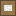
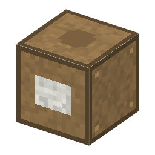

Drafting Table・ブロック・Semiconductor
仮（まだ本物どおりでない所がある）

①子ども 方眼にチップの模様を描く机。描き方は自由。
②学生 層を選んで左クリックで塗る・右クリックで消す。下の断面図で、横から見た形がわかる。✂ で選んだ層を原図に切り出す。
③大人 1960年代の IC は、方眼紙に大きく描いた回路を、赤いフィルム（ルビリス）を手で切り抜いて原図にし、写真で何百分の一に縮めてマスクにした。
④ガチ 原図はチップの数百倍の大きさで、座標を読める大きな台（コーディナトグラフ）の上で切った ⚠️。のちにコンピュータで描く CAD に変わり、原図は要らなくなった。
（このアイテムを使うレシピは無い）